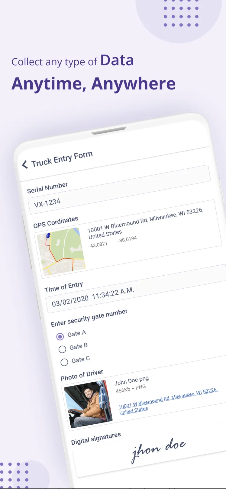
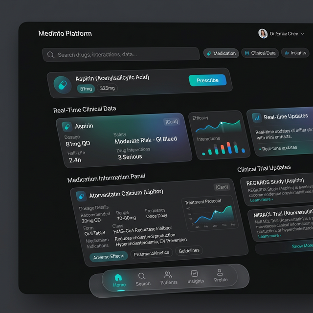
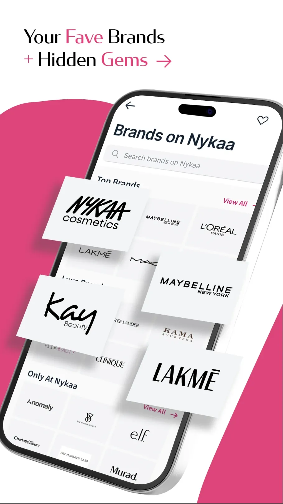
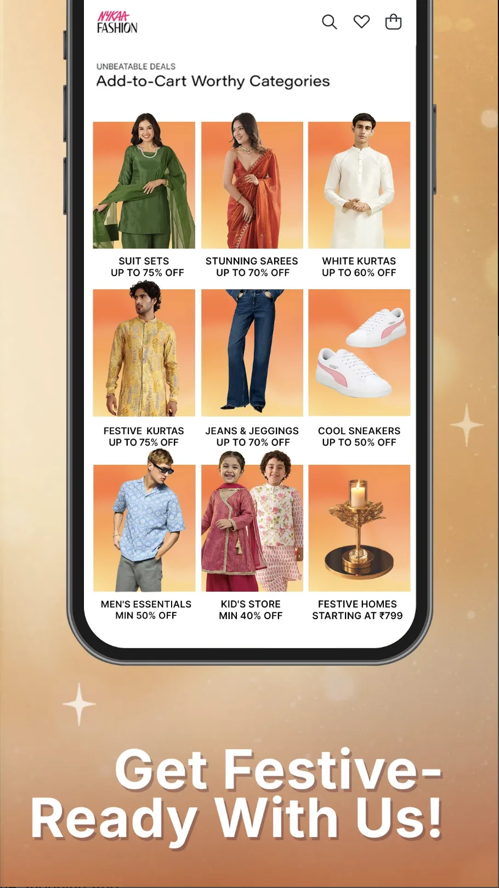

I ship products with fleets of agents.
Software engineer with 4+ years shipping production mobile apps — Google Home (100M+ downloads), Nykaa, a KMP fintech platform — now operating as a forward-deployed engineer: I point orchestrated AI agent fleets at real problems and deliver deployed, working systems, end-to-end, fast.

Deployed and running.
Not mockups. Each system below is live, with a real database or API behind it — built and shipped by orchestrated agent fleets, verified and maintained by me.

Jira-class ticketing platform: 18-module NestJS API, 18 Prisma models, sprint boards, guarded workflows, realtime, widget dashboards, audit log. Turborepo monorepo. API health-checked live on Render.

E-commerce flagship with a live Supabase database: full SQL schema + seed, GSAP motion system, design-token pipeline, and an agent-maintainable admin surface so a non-technical person can run the store.

Real-time cricket betting surface: live scores, multiple betting markets, bet settlement, and admin-controlled credit management — a full stateful trading product, not a static page.

Professional chambers presence for a Supreme Court senior advocate: practice areas, credentials, and consultation intake — designed and shipped agent-first.

The method behind the speed.
Every system above was built by a fleet, not a lone agent. Frontier models plan, review, and steer; cost-efficient models do the mechanical work; I own architecture, verification, and the deploy button.
Spawn parallel subagents with isolated contexts — cheap coding workers steered by frontier orchestrators — merging results through me as the review gate. Subagents plan, build, and verify; nothing ships unverified.
Assembled my own harnesses and toolchains around model APIs — context management, token discipline, retry loops, prompt scaffolds — and stress-tested every major agent framework to know which to reach for.
Drive local models (Ollama, ComfyUI for diffusion/image generation) and frontier APIs side by side — routing work to the cheapest model that can hold the line, escalating when quality demands it.
Every new repo, framework, and agent tool gets a real spin — from early Auto-GPT clones in 2023 to today's harness landscape. The survivors become load-bearing parts of my stack; the rest get documented and dropped.
Why this matters for your team: this is the forward-deployed pattern — one engineer who can sit with the customer, scope the problem, then multiply themselves through agent fleets to deliver a deployed system, not a slide deck. The five live products above were built this way. So was the mobile platform work below.
orchestrate → steer → verify → deploy — every project, every time
Where I've shipped.
Sole mobile lead for a multi-tenant low-code platform (forms, workflows, process automation) serving government, consulting, and banking clients. Joined with zero knowledge transfer and a codebase that wouldn't build — fixed it, unified it, and rebuilt the architecture. Runs agentic workflows as the daily driver.
High-traffic consumer e-commerce. Shipped features across listing, detail, and search during a live UIKit→SwiftUI migration with dual-framework feature flags; delivered the Nike India checkout UI end-to-end against strict brand compliance.
Extended an Android F&O trading app to iOS via Kotlin Multiplatform. Built the SwiftUI layer of an 8-step onboarding & KYC SDK (Aadhaar, PAN, DigiLocker, e-sign, banking), cutting onboarding time 24%; resizable realtime widget framework.
Sole iOS developer on a live 4.9-rated pharma app. Led the Objective-C→Swift migration, integrated 20+ REST APIs, resolved 30+ production issues.
20-engineer team on a 100M+-download flagship. Owned OBE device-setup flows with JSON/Proto-driven dynamic screens; shipped CameraZilla behind feature flags; resolved 100+ bugs in a hybrid ObjC/Swift codebase.
Mobile work, documented.
Deep-dives on the apps behind the field record — the challenge, the architecture, and what shipped.

Sole mobile lead on a multi-tenant low-code platform. Designed the KMP V2 schema architecture, built the Beat police app from scratch, and run agentic AI workflows (Claude, Codex, Ollama) as part of the delivery loop.
read case file →
Single-screen options trading across iOS + Android. KMP onboarding SDK, realtime widget framework, 70%+ shared logic.
read case file →
100M+ downloads. OBE setup flows, schema-driven screens, 30+ shipped features across Nest and Chromecast.
read case file →
4.9★ live pharma app as sole iOS dev. ObjC→Swift migration, 20+ APIs, clinical decision-support UI.
read case file →
Live UIKit→SwiftUI migration, Nike India checkout, remote-config-driven UI and deep links.
read case file →
Product discovery, curated collections, and engagement flows for a major fashion marketplace.
read case file →
Video analysis tools, coach-athlete feedback loops, performance tracking for a coaching platform.
read case file →Education.
Graduated with Distinction. Algorithms, data structures, neural networks, and mobile systems architecture.
DSA, React, Redux, Node.js, Express, MongoDB. Top ranks in multiple contests.
Deploy me on your problem.
Forward-deployed work, agent-fleet builds, mobile leadership, or hard migration problems. Indore-based, remote-ready, fast.